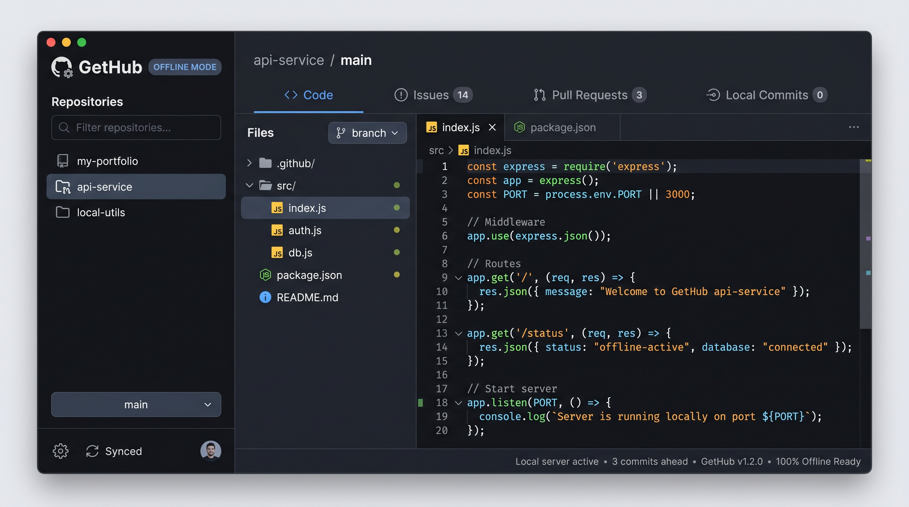

Browse GitHub repositories offline
GetHub is a fast, native Windows desktop client designed to download and browse GitHub repositories offline with 100% visual fidelity — code, branches, visual commit graph, diffs, and formatted READMEs.
Test the interactive preview: switch files, change branches, or inspect the Diff tab.
Authentic GitHub Experience, Right on Your Desktop
Engineered from the ground up to reproduce the GitHub web experience inside a snappy, lightweight Windows application that never depends on a connection.

Repository Library
Quick-switch sidebar showing your offline repositories with language tags, stars, fork counts, and last sync timestamps. Filter instantly with Ctrl+F.
GitHub-Style Section Tabs
Explore Code, History, Issues, Pull Requests, Actions, Projects, Wiki, and Insights. Tabs adapt dynamically without text truncation across window sizes.
Syntax-Highlighted Viewer
High-performance code reader with line numbers, monospace alignment, and full GitHub-Flavored Markdown README parsing with tables and local image resolution.
Interactive Commit Graph
Custom-painted GDI+ commit graph visualizing branch lanes, merge commits, commit SHAs, author dates, and commit message details with zero lag.
Built-in Diff Engine
Review side-by-side and hunk diffs with color-coded additions, deletions, and gutter line numbers. Inspect exactly what changed in any commit.
About & Release Sidebar
Right-hand column highlighting project description, website links, topic chips, release version history, and contributors with cached avatars.
Everything you need to read repositories anywhere
Built for developers, students, researchers, and systems administrators who need fast, uninterrupted access to source code.
One-Click Downloader & Smart Cache
Fetch any public repository or private repository (via GitHub Personal Access Token) directly by entering its URL or owner/repo shorthand. GetHub streams the archive and unpacks it into your local storage with an intelligent segment-budgeting algorithm that completely overcomes Windows 260-character MAX_PATH limitations.
| Supports | Public repos, private repos (PAT), custom branches & tags |
|---|---|
| Storage | %LocalAppData%\GetHub\repos\<owner>\<repo> |
| Sync | One-click update button keeps your offline snapshot synchronized |
Code & Markdown Rendering Engine
Read code files with custom syntax highlighting across C#, JavaScript, TypeScript, Python, HTML, CSS, Go, Rust, Java, XML, JSON, and Shell. Read formatted READMEs through a specialized GitHub Flavored Markdown (GFM) renderer supporting headings, tables, task lists, code blocks, blockquotes, and automatic local image path resolution.
| Syntax | Multi-language tokenizer with line numbers & clean indentation |
|---|---|
| Markdown | GFM tables, checkboxes, blockquotes, code blocks, image resolution |
| Security | Embedded HtmlSanitizer prevents malicious script execution |
Visual Commit Graph & Hunk Diff Engine
Follow the full Git history commit by commit. The custom GDI+ commit graph paints branching lanes, merge nodes, author cards, commit hashes, and commit messages. Select any commit to see files modified, additions, deletions, and an interactive side-by-side or hunk diff view with color-coded syntax.
| Commit Graph | Interactive visual branching lanes, commit nodes, author & dates |
|---|---|
| Diff Viewer | Color-coded line-by-line diffs with additions, deletions & gutters |
| Commit Files | Added, modified, deleted, and renamed file status badges |
Repository Metadata, Releases & Contributors
The right-hand About panel replicates GitHub's sidebar: repository description, homepage link, categorized topic chips, stars, forks, watchers, open issues count, and license type. It also tracks the repository release timeline with downloadable asset links and lists contributors with avatars.
| Repository Details | Description, homepage, topics, license, open issues count |
|---|---|
| Releases | Release versions, published timestamps, and direct asset links |
| Contributors | Contributor roster with GitHub avatar badges and commit tallies |
Local Git Clones & Drag-and-Drop
GetHub isn't just for downloading — you can drag and drop any local folder containing a .git directory straight from Windows Explorer into GetHub. GetHub uses an ultra-fast local Git history reader that parses commits, branches, and diffs directly from your disk, allowing you to browse repos from GitLab, Bitbucket, or local servers offline.
| Drag & Drop | Drop local git folders or repository URLs directly into the app |
|---|---|
| Local Git Engine | Reads native git log and diffs with high-performance parsing |
| Any Git Source | Works seamlessly with GitHub, GitLab, Bitbucket, or self-hosted |
Native Performance & Total Privacy
Built with pure C# and .NET Framework 4.8 WinForms with custom double-buffered GDI+ controls. GetHub launches in under half a second and consumes around 40 MB of RAM (compared to 400 MB+ for Electron-based apps). Your code never leaves your computer, and no telemetry or tracking is collected.
| Memory & CPU | Lightweight (~40 MB RAM), zero runtime bloat, instant startup |
|---|---|
| Themes | High-contrast Dark and Light modes tailored to GitHub's color palette |
| Privacy | 100% private. Runs purely on local disk; no telemetry or tracking |
Inside GetHub V3.0: Clean Architecture
Built with a modular, maintainable C# architecture using Microsoft .NET Framework 4.8. Designed for maximum responsiveness, clean separation of concerns, and zero external bloat.
GetHub.Forms UI Layer
Hosts the main workspace shell, repository library split-view, add-repository dialog with URL validation, download progress monitoring, and settings management.
GetHub.Controls Custom GDI+
Custom WinForms controls painted with GDI+: reactive repository tab strip, visual commit branching graph, interactive diff viewer, repository cards, and responsive about panel.
GetHub.Services Core Engine
Orchestrates GitHub REST API communication, zip stream downloading with deep path segment budgeting for MAX_PATH, native git history extraction, and commit caching.
GetHub.Rendering HTML & Markdown
Compiles local code and documentation into sanitized HTML pages: GitHub-Flavored Markdown parser, multi-language syntax highlighter, and relative path resolver for images and links.
GetHub.Models Data Models
Encapsulates repository records, commit information, diff details, file modifications, releases, contributors, and user application settings.
GetHub.Utilities Foundation
Provides centralized color palettes for dark and light themes, embedded icon and logo asset management, DPI-aware display helpers, and resilient filesystem operations.
Technical Specifications
Why Use GetHub?
Compare GetHub against standard web browsing, heavy Git desktop clients, and raw archive extraction.
| Capability | GetHub V3.0 | GitHub.com Web | Heavy Git Desktop Clients | File Explorer & Zip |
|---|---|---|---|---|
| 100% Offline Availability | ✓ Full snapshot | ✗ Requires internet | ~ Commits only | ✓ Unformatted files |
| GitHub-Fidelity UI & Navigation | ✓ Full GitHub views | ✓ Web only | ✗ Custom GUI layout | ✗ Plain folder view |
| Visual Commit Graph & Diff Engine | ✓ Built-in GDI+ | ✗ Web only | ✓ Included | ✗ None |
| Rendered Markdown READMEs | ✓ Built-in GFM | ✓ Web only | ✗ Raw markdown | ✗ Plain text |
| Resource Footprint | ✓ ~40 MB RAM (C#) | ~ 200 MB+ browser tab | ✗ 400 MB+ (Electron) | ✓ Minimal |
| Deep Windows MAX_PATH Handling | ✓ Segment budgeting | ✓ N/A | ~ Needs git config | ✗ Path too long errors |
| Private Repositories via PAT | ✓ Secure local token | ✓ Web login | ✓ SSH / OAuth | ✗ Manual browser zip |
Keyboard Shortcuts for Power Users
Get Started in Minutes
Download the standalone executable or compile it directly from source.
-
Download or Build
Get the standalone executable GetHub.exe or build from source using the PowerShell script.
-
Add a Repository
Enter any GitHub URL (e.g.
owner/repo), or drag and drop an existing local Git directory into the window. -
Browse Offline
Inspect source files, switch branches, review commit history, and examine diffs without an internet connection.
Build from Source
# 1. Clone or download the repository git clone https://github.com/Abdelwahab-Ayman/GetHub.git cd GetHub # 2. Run the automated PowerShell build script (uses csc.exe) .\build.ps1 -Configuration Release # Binary output: .\build\GetHub.exe
System Requirements
| Operating System | Windows 10 or Windows 11 (64-bit or 32-bit) |
|---|---|
| Runtime Required | Microsoft .NET Framework 4.8 (pre-installed on Windows 10/11) |
| To Build from Source | Windows PowerShell & .NET 4.8 Framework tools or Visual Studio 2022 |
| Local Clones | Any Git repository (Git installation optional for local .git parsing) |
Frequently Asked Questions
Do I need an active internet connection to use GetHub?
No. Once a repository is downloaded or dragged into GetHub, all its files, directories, Markdown READMEs, commit logs, and diffs are cached locally on your machine. You only need an internet connection when you choose to download or sync a repository.
How does GetHub handle private GitHub repositories?
You can browse private repositories by generating a GitHub Personal Access Token (classic or fine-grained with repo scope) and saving it in GetHub's Settings dialog. The token is stored securely in your local user app settings and gives you access to private repos as well as 5,000 GitHub API requests per hour instead of the unauthenticated limit of 60.
How does GetHub solve the Windows 260-character path limit (MAX_PATH)?
Deeply nested directories in modern codebases frequently exceed the legacy Windows 260-character limit. GetHub features an intelligent segment-budgeting algorithm in GitHubDownloader.cs that calculates path depth and shortens intermediate folder names dynamically, guaranteeing safe archive extraction without path length errors.
Can I browse repositories cloned from GitLab, Bitbucket, or self-hosted servers?
Yes. Drag and drop any folder containing a .git repository directory into GetHub. GetHub's native GitHistoryReader will parse commits, branches, and diffs directly from your local Git clone regardless of where it was hosted.
Does GetHub modify my source code or Git history?
Never. GetHub operates strictly as a read-only viewer. Downloaded snapshots are stored separately in your user data directory, and local clones opened in GetHub remain completely untouched.
Where are downloaded repositories stored?
All downloaded repositories, cached metadata (repo.json), commit caches, and unpacked files are stored neatly under %LocalAppData%\GetHub\repos\<owner>\<repo>. You can click the "Open Folder" button in GetHub anytime to inspect them in Windows Explorer.
Is Git required to be installed on my PC?
Git is not required for downloading and browsing repositories from GitHub. For reading commit history from local existing clones, GetHub uses the system git command if available, or falls back to its cached repository history.